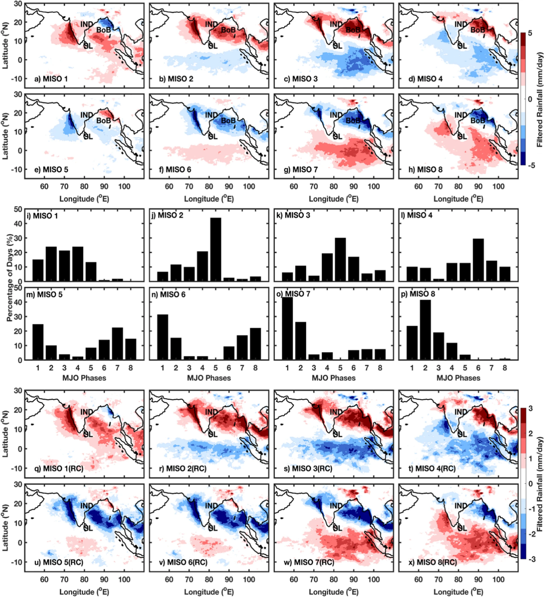
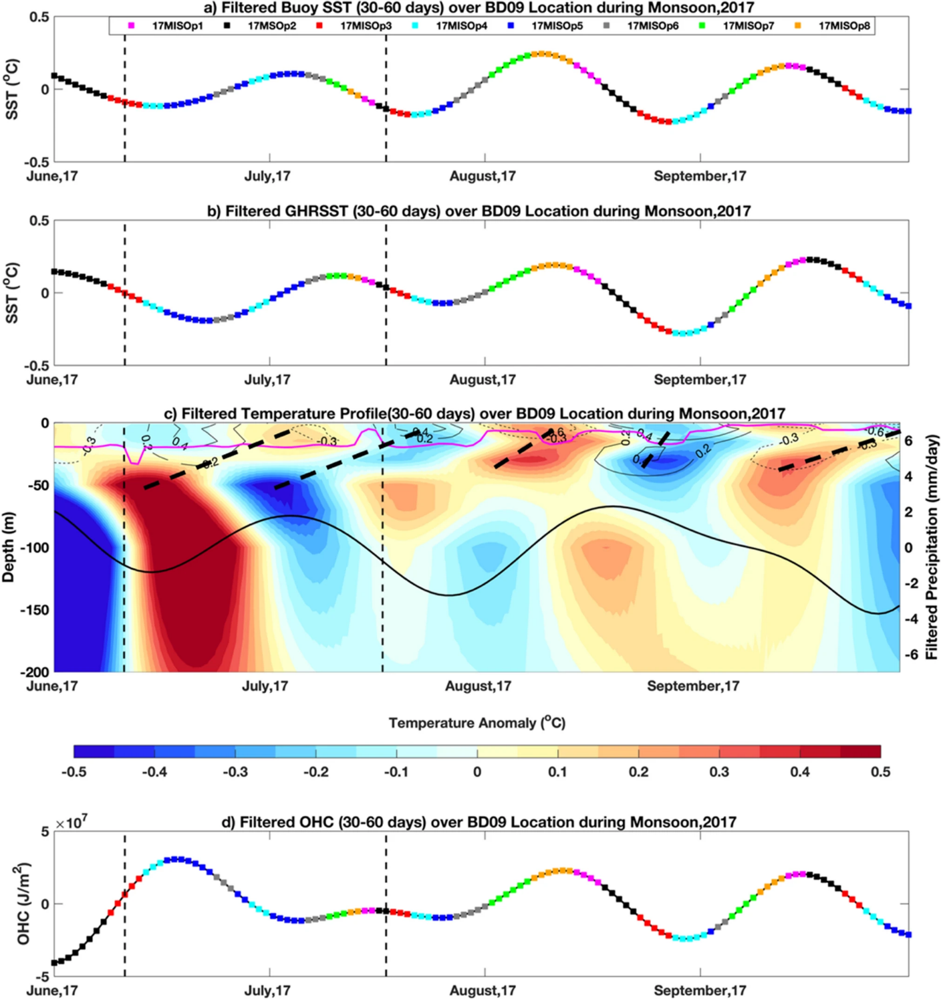
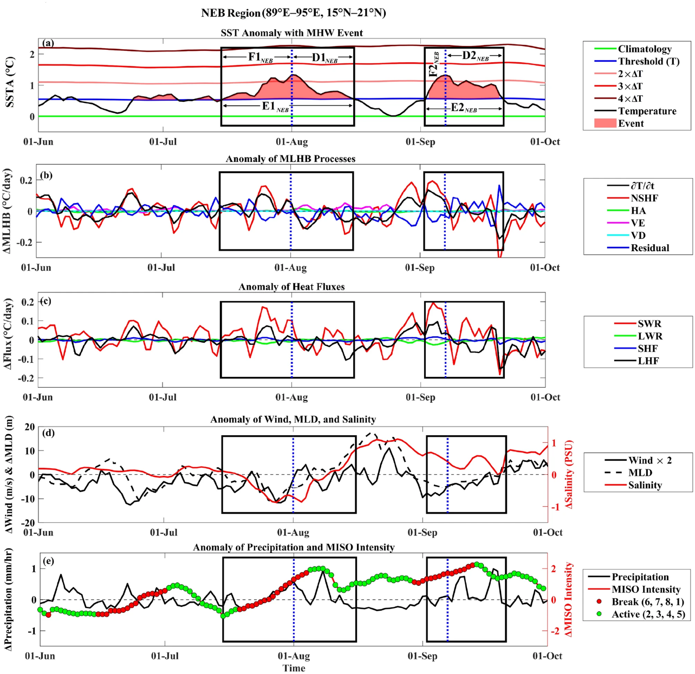

← Back to all research areas
Overview
The Indian Summer Monsoon is driven by a continuous, dynamic exchange between the ocean and the atmosphere. The intraseasonal rhythms that govern this massive system — specifically the Monsoon Intraseasonal Oscillation (MISO) — act as a master switch for regional climate. Tracking these cycles reveals how MISO's active and break phases dictate the birth of rain-bearing monsoon depressions in the atmosphere while simultaneously triggering extreme marine heatwaves in the Bay of Bengal. Ultimately, the monsoon is not a steady seasonal force, but a highly interconnected system where the sea and sky constantly react to one another.
Focus Areas
- Evaluation of standard intraseasonal indices (MJO, MISO, BSISO) to build a unified framework for mapping monsoon rainfall variability.
- Spatiotemporal tracking of Monsoon Depressions and their dependence on specific large-scale MISO phases.
- Analysis of the air-sea interactions and oceanic conditions that either sustain or suppress the genesis and intensification of synoptic events.
- Identification of the primary thermodynamic drivers — such as surface heat fluxes and stratification — behind the anomalous formation of marine heatwaves during monsoon.
- Investigation of the two-way coupling between oceanic heatwave evolution and the atmospheric active/break cycles of the monsoon.
Interesting Results

(a)–(h) Distribution of filtered rainfall during different phases of significant MISO events. (i)–(p) Percentage of co-occurrence (in terms of days) of different MJO phases with individual MISO phases. (q)–(x) Reconstructed phase composite of MISO using the phase composite of MJO and co-occurrence percentage. RC represents the reconstructed phase composite.
Read More

Filtered (30–60 days) signals for SST (1 m depth) observed at BD09 location. Different colors of square markers indicate different phases of MISO. The vertical dashed line shows the genesis date of depressions during 2017. Time Series of vertical profile of filtered (30–60 days) temperature. Black overlaid bold solid line shows the daily filtered precipitation (mm/day) over the buoy location.
Read More

Time series of the anomaly of SST (SSTA) with MHW events and potential drivers of MHW in the NEB region (89°E–95°E and 15°N–21°N) during the 2020 SW monsoon season. The filled red patch represents the observed MHW events. MLHB processes — NSHF, HA, VE, VD, and Residual — modulating the MLT tendency resulting in MHW due to excess heat storage.
Read More
Why It Matters
Understanding the direct links between large-scale monsoon oscillations, synoptic storms, and oceanic heatwaves is critical for improving extended-range weather forecasting. As climate change intensifies these extremes, these thermodynamic insights provide the framework needed to better predict heavy regional flooding and marine thermal anomalies, ultimately helping to protect vulnerable coastal communities and economies.